Quick Navigation & Topic Roadmap
Matrix Decompositions modern Machine Learning, Computer Vision, Recommender Systems, aur Quantum Physics ke fundamental building blocks hain. Kisi bhi section par jump karne ke liye roadmap select karein:
0. Opening Story: What Happens When a Matrix Transforms a Vector?
Linear algebra me jab hum kisi vector ko matrix se multiply karte hain (A @ v), toh geometric terms me matrix us space ko transform (stretch, compress, rotate, ya shear) karta hai. Lekin is pure transformation me ek magical curiosity chupi hoti hai.
Maan lijiye hamare paas ek simple 2D scaling matrix hai:
[0.0, 3.0]]
Aayein dekhein ki ye matrix standard basis vectors \(v_1 = [1, 0]^T\) aur \(v_2 = [0, 1]^T\) ke sath kya karta hai:
import numpy as np A = np.array([ [2.0, 0.0], [0.0, 3.0] ]) vectors = np.array([ [1.0, 0.0], [0.0, 1.0] ]) for vector in vectors: transformed = A @ vector print("Original vector: ", vector) print("Transformed vector:", transformed) print()
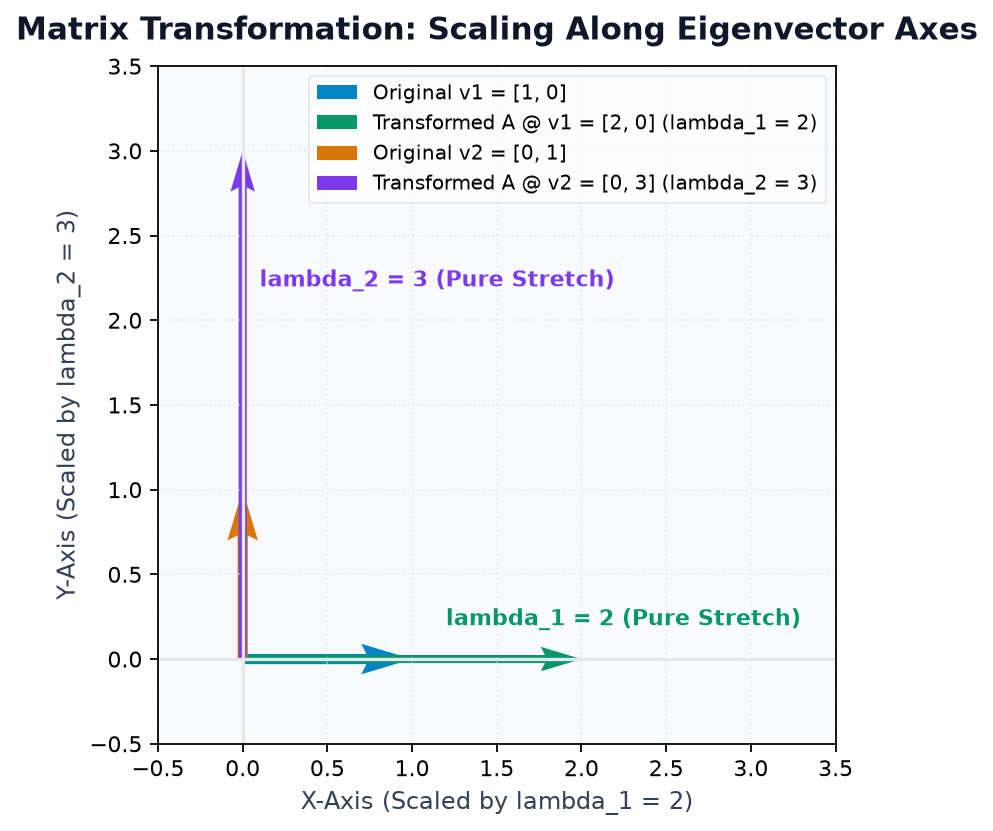
Dhyan se dekhiye: vector
[1, 0] transformation ke baad [2, 0] ban gaya. Uski direction bilkul nahi badli—wo sirf 2 guna stretch hua! Isi tarah [0, 1] transform hokar [0, 3] ban gaya—uski bhi direction nahi badli, bas length 3 guna ho gayi.Inhi special invariant directions ko hum Eigenvectors kehte hain, aur unke scaling factors (2 aur 3) ko Eigenvalues kehte hain!
Lekin yahan sabse bada sawal uthta hai: "Agar matrix diagonal na ho aur space ko tilt ya shear kar raha ho, tab hum un special directions ko automatically kaise khojein?" Yahi se shuru hoti hai Spectral Theory aur Matrix Decomposition ki journey!
A. Eigenvalues & Eigenvectors from First Principles
Pehle concept ko simple Hinglish me build karte hain. Jab bhi kisi square matrix \(A\) se koi vector \(\mathbf{v}\) multiply hota hai, toh general case me vector rotate ho jata hai. Lekin agar kisi vector ke liye matrix multiplication ek simple scalar multiplication ban jaye:
- A: Ek \(n \times n\) square transformation matrix.
- v: Non-zero Eigenvector (wo direction jo transform hone ke baad rotate nahi hoti).
- λ (lambda): Scalar Eigenvalue (stretch/shrink factor).
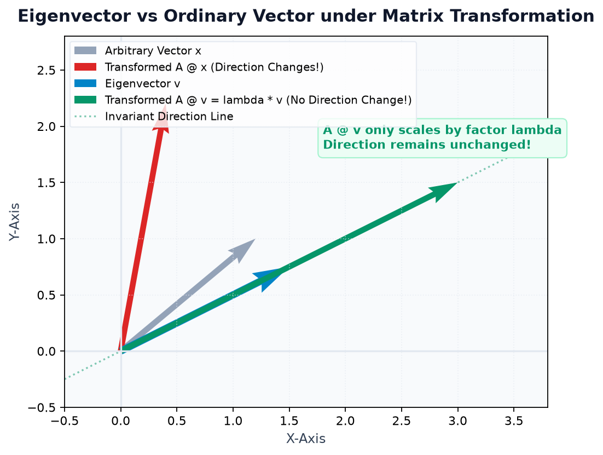
Trivially \(A @ \mathbf{0} = \lambda \mathbf{0}\) hamesha true hota hai, lekin isse koi direction discover nahi hoti. Isliye definition ke hisab se eigenvector hamesha non-zero (\(\mathbf{v} \neq \mathbf{0}\)) hona zaroori hai. (Eigenvalue \(\lambda\) zero ho sakti hai, lekin eigenvector zero nahi ho sakta!).
Characteristic Equation Concept
Equation \(A\mathbf{v} = \lambda\mathbf{v}\) ko rearrange karein toh:
Kyunki \(\mathbf{v} \neq \mathbf{0}\), is system ke non-trivial solutions tabhi exist karenge jab matrix \((A - \lambda I)\) singular ho (iska determinant zero ho):
NumPy me humein manual determinant equations solve karne ki zaroorat nahi hoti; np.linalg.eig() function highly optimized QR algorithms se ye eigenvalues aur eigenvectors ek fraction of millisecond me nikaal deta hai!
Example 1 — Diagonal Matrix
import numpy as np A = np.array([ [2.0, 0.0], [0.0, 3.0] ]) eigenvalues, eigenvectors = np.linalg.eig(A) print("Eigenvalues:", eigenvalues) print("Eigenvectors Matrix (Columns):\n", eigenvectors)
Example 2 — Non-Diagonal Matrix with Real Eigenvalues
Aayein ek general matrix \(A = \begin{bmatrix} 4 & 1 \\ 2 & 3 \end{bmatrix}\) ka eigen analysis karein:
import numpy as np A = np.array([ [4.0, 1.0], [2.0, 3.0] ]) evals, evecs = np.linalg.eig(A) print("Computed Eigenvalues:", evals) print("Eigenvectors (Columns):\n", evecs)
Notice karein ki eigenvalues \(\lambda_1 = 5.0\) aur \(\lambda_2 = 2.0\) hain. Pehla eigenvector evecs[:, 0] hai \([0.7071, 0.7071]^T\) (jo \([1, 1]^T\) ka unit vector hai), aur doosra eigenvector evecs[:, 1] hai \([-0.4472, 0.8944]^T\) (jo \([-1, 2]^T\) ka unit vector hai)!
B. Calculate & Verify Eigenvalues and Eigenvectors
Data science aur scientific computing me kabhi bhi kisi algorithm ke output ko blindly accept nahi kiya jata. Hamesha numerical verification zaroori hota hai.
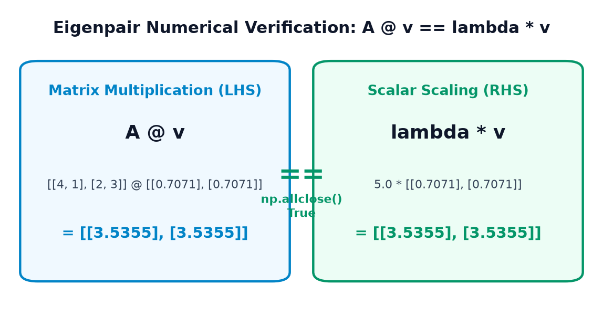
w, V = np.linalg.eig(A) me:-
w[i] ith eigenvalue hai.-
V[:, i] (ith column of V) us w[i] ka corresponding eigenvector hai!Kabhi bhi
V[i] (row) mat lijiye—ye sabse common beginner bug hai!
Example 1 — Programmatic Verification Loop
Dekhiye kaise np.allclose() se har eigenpair ko verify kiya jata hai:
import numpy as np A = np.array([ [4.0, 1.0], [2.0, 3.0] ]) values, vectors = np.linalg.eig(A) for i, val in enumerate(values): vec = vectors[:, i] # ith Column! LHS = A @ vec RHS = val * vec is_valid = np.allclose(LHS, RHS) max_diff = np.max(np.abs(LHS - RHS)) print(f"Pair {i+1}: lambda={val:.1f}") print(f" LHS (A @ v): {LHS}") print(f" RHS (lambda * v): {RHS}") print(f" Verified Equal? {is_valid} (Residual Noise: {max_diff:.2e})") print()
Example 2 — Symmetric Matrices & `np.linalg.eigh()`
Data science me covariance matrices hamesha Symmetric (\(A = A^T\)) hoti hain. Symmetric matrices ke paas do extraordinary superpowers hoti hain:
- Unke sabhi eigenvalues hamesha Real numbers hote hain (kabhi complex imaginary nahi aate).
- Distinct eigenvalues ke corresponding eigenvectors hamesha Mutually Orthogonal (perpendicular, \(v_1 \cdot v_2 = 0\)) hote hain!
NumPy me symmetric matrices ke liye specialized function hota hai: np.linalg.eigh() (yahan 'h' stands for Hermitian/Symmetric):
import numpy as np # Symmetric matrix (A == A.T) A_sym = np.array([ [3.0, 1.0], [1.0, 3.0] ]) vals, vecs = np.linalg.eigh(A_sym) print("Symmetric Eigenvalues (Ascending):", vals) print("Symmetric Eigenvectors:\n", vecs) # Check Orthogonality (Dot product of columns must be 0) dot_product = np.dot(vecs[:, 0], vecs[:, 1]) print(f"Dot product of v1 and v2: {dot_product:.6f} (Perpendicular? {np.isclose(dot_product, 0.0)})")
C. Geometric Interpretation of Transformations
Geometry me matrix transformation ko samajhne ke liye unit circle aur coordinate vectors ka behavior dekhna sabse powerful technique hai:
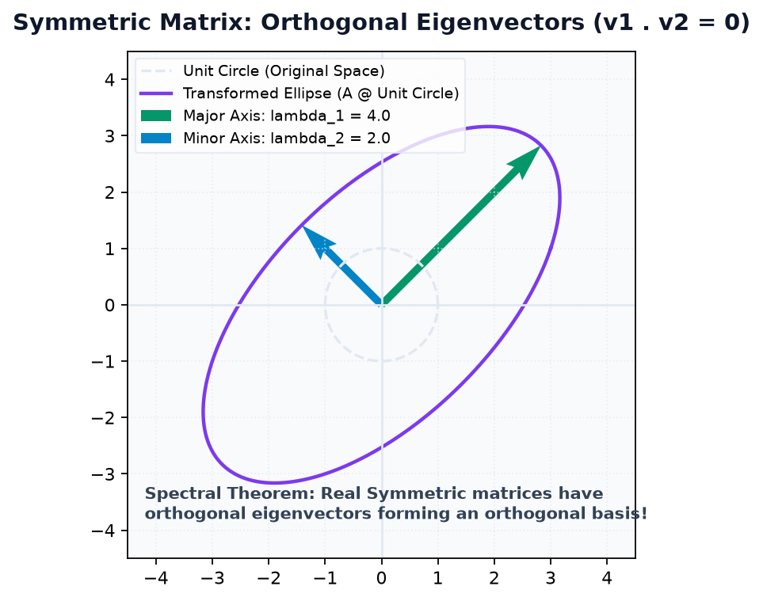
1. Stretching Along Eigenvector Axes
Jab koi matrix circle ko transform karta hai, toh wo ellipse ban jata hai. Ellipse ka longest axis (major axis) largest eigenvalue \(\lambda_1\) ke along hota hai, aur shortest axis (minor axis) smallest eigenvalue \(\lambda_2\) ke along hota hai! Yahi fundamental principle PCA (Principal Component Analysis) me data variance ko capture karne ke liye use hota hai.
2. Reflection & Negative Eigenvalues
Agar kisi matrix ka eigenvalue negative ho (\(\lambda < 0\)), toh vector transform hokar apni original direction ke opposite \(180^\circ\) flip (reverse) ho jata hai, lekin rehta usi collinear line par hai:
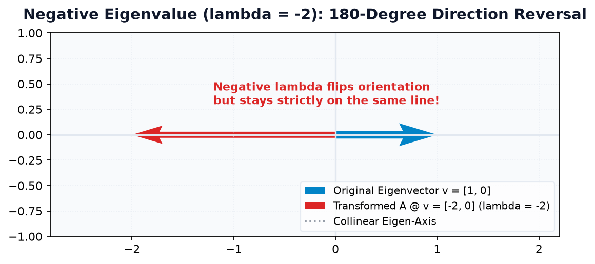
import numpy as np A_neg = np.array([ [-2.0, 0.0], [ 0.0, 3.0] ]) evals, evecs = np.linalg.eig(A_neg) vx = np.array([1.0, 0.0]) transformed = A_neg @ vx print("Eigenvalues:", evals) print("Original vx: ", vx) print("Transformed vx:", transformed) print("Is transformed == -2.0 * vx?", np.allclose(transformed, -2.0 * vx))
D. Eigenvalue Decomposition (Diagonalization)
Ab aate hain core concept par: Matrix Factorization (Decomposition). Agar kisi square matrix \(A\) ke paas \(n\) linearly independent eigenvectors hon, toh hum matrix \(A\) ko teen simpler matrices ke product me split (factorize) kar sakte hain:
- V: Eigenvector matrix jahan har column ek eigenvector \(\mathbf{v}_i\) hai.
- Λ (Capital Lambda): Diagonal matrix jiske diagonal par eigenvalues \(\lambda_i\) hote hain.
- V_inv: Eigenvector matrix ka inverse \(V^{-1}\).
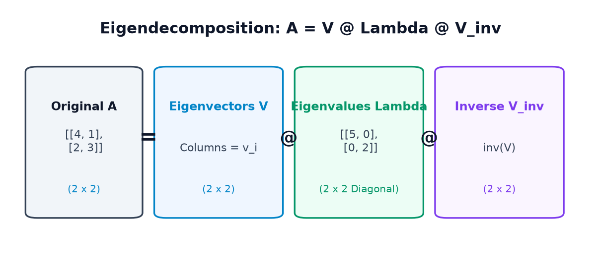
Example 1 — Step-by-Step Eigendecomposition Reconstruction
import numpy as np A = np.array([ [4.0, 1.0], [2.0, 3.0] ]) # Step 1: Compute eigenvalues and eigenvectors evals, V = np.linalg.eig(A) # Step 2: Form diagonal matrix Lambda Lambda = np.diag(evals) # Step 3: Compute inverse of V V_inv = np.linalg.inv(V) # Step 4: Reconstruct A = V @ Lambda @ V_inv A_reconstructed = V @ Lambda @ V_inv print("Original Matrix A:\n", A) print("Reconstructed Matrix:\n", A_reconstructed) print("Does A == V @ Lambda @ V_inv?", np.allclose(A, A_reconstructed))
Example 2 — Symmetric Orthogonal Decomposition: \(A = V \Lambda V^T\)
Symmetric matrices me \(V\) orthogonal hoti hai (\(V^{-1} = V^T\)). Iska matlab humein expensive matrix inversion calculate karne ki zaroorat hi nahi hoti—sirf transpose V.T lagana kaafi hota hai:
import numpy as np A_sym = np.array([ [3.0, 1.0], [1.0, 3.0] ]) vals, V = np.linalg.eigh(A_sym) Lambda = np.diag(vals) # Uses V.T instead of inv(V)! A_recon = V @ Lambda @ V.T print("Original Symmetric A:\n", A_sym) print("Reconstructed via V @ Lambda @ V.T:\n", A_recon) print("Perfect Numerical Match?", np.allclose(A_sym, A_recon))
Agar humein matrix ko 100 baar multiply karna ho (\(A^{100}\)), toh traditional matrix multiplication bohot slow aur unstable hoga. Lekin eigendecomposition se:
\[ A^k = (V \Lambda V^{-1})^k = V \Lambda^k V^{-1} \] Kyunki \(\Lambda\) diagonal hai, uski power sirf diagonal elements ki powers nikalna hota hai: \(\lambda_i^k\)! Ye Google PageRank aur Markov Chains ka secret formula hai.
E. What is Matrix Decomposition? (The Big Picture)
Real-world data science me matrices aksar bohot badi aur complex hoti hain (e.g. 10,000 users \(\times\) 5,000 movies). Matrix Decomposition ka matlab hota hai kisi complex, dense matrix ko do ya teen simpler, structured matrices me factorize karna:
| Matrix Decomposition | Mathematical Factorization | Required Matrix Shape / Type | Primary Real-World Superpower |
|---|---|---|---|
| Eigendecomposition | \(A = V \Lambda V^{-1}\) | Square, Diagonalizable | Matrix powers \(A^k\), differential equations, vibrational modes. |
| Singular Value Decomposition (SVD) | \(A = U \Sigma V^T\) | Any Matrix (Square or Rectangular!) | Image compression, PCA, Recommendation systems, Latent semantic analysis. |
| QR Decomposition | \(A = Q R\) | Square or Tall Rectangular | Linear least squares regression, Gram-Schmidt orthogonalization. |
| Cholesky Factorization | \(A = L L^T\) | Symmetric Positive-Definite | 2x faster than LU decomposition, Monte Carlo simulations, Kalman filters. |
Jaise number \(60\) ko prime factors \(2^2 \times 3 \times 5\) me todne par uski saari mathematical properties (divisibility, roots) transparent ho jati hain, waise hi matrix ko uske decomposition factors me todne par uske underlying geometric directions, rank, aur hidden patterns crystal-clear reveal ho jate hain!
F. Singular Value Decomposition (SVD)
Agar linear algebra ka koi single crown jewel hai jo Google search, Netflix recommendations, JPEG image compression, aur Natural Language Processing (LLMs) me universally use hota hai, toh wo hai Singular Value Decomposition (SVD).
Eigendecomposition sirf square aur diagonalizable matrices par kaam karta hai. Lekin SVD duniya ke HAR matrix par kaam karta hai—chahe wo square ho, rectangular ho, tall ho, ya wide ho!
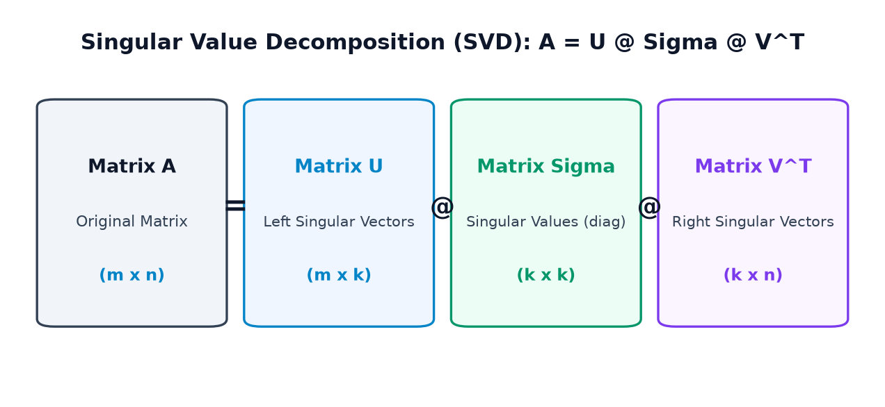
The SVD Mathematical Formulation
- U: Left singular vectors matrix (Orthonormal columns, \(U^T U = I\)). Ye row space ke features capture karta hai.
- Σ (Sigma): Diagonal matrix of Singular Values (\(\sigma_i\)). Ye hamesha non-negative (\(\sigma_i \ge 0\)) hote hain aur NumPy inhe hamesha descending order (largest to smallest) me sort karke deta hai!
- V^T: Transpose of right singular vectors (Orthonormal rows, \(V^T V = I\)). Ye column space ke features capture karta hai.
Example 1 — Decompose and Reconstruct a Rectangular Matrix (2 x 3)
Aayein ek \(2 \times 3\) rectangular matrix par np.linalg.svd() run karein:
import numpy as np A = np.array([ [1.0, 2.0, 3.0], [4.0, 5.0, 6.0] ]) # full_matrices=False returns reduced (thin) factors U, s, Vt = np.linalg.svd(A, full_matrices=False) print("Original Matrix Shape A:", A.shape) print("U Shape: ", U.shape) print("Singular Values (s): ", np.round(s, 4)) print("Vt Shape: ", Vt.shape) # Reconstruct: Sigma must be converted to diagonal 2D matrix Sigma = np.diag(s) A_recon = U @ Sigma @ Vt print("\nReconstructed Matrix:\n", np.round(A_recon, 4)) print("Does U @ Sigma @ Vt == A?", np.allclose(A, A_recon)) print("Reconstruction Error: ", np.linalg.norm(A - A_recon))
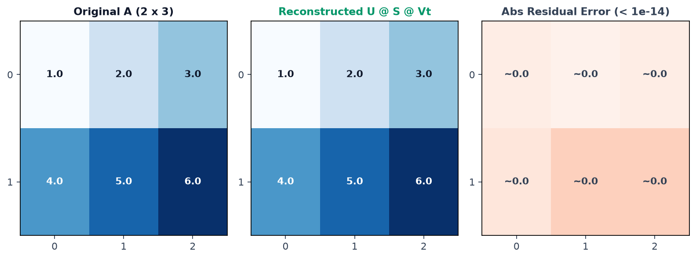
NumPy memory save karne ke liye singular values ko 1D array
s ke form me return karta hai (e.g. [9.508, 0.773]), 2D matrix nahi! Isliye matrix multiplication se pehle hamesha Sigma = np.diag(s) lagana compulsory hota hai.
Example 2 — Low-Rank Approximation (Truncated SVD)
SVD ka sabse powerful theoretical theorem hai Eckart-Young-Mirsky Theorem: Kisi bhi matrix ka best possible lower-rank approximation uske leading singular values ko retain karke banta hai!
Hamari matrix me do singular values the: \(\sigma_0 = 9.508\) aur \(\sigma_1 = 0.773\). Agar hum sirf pehla component (\(k=1\)) rakhein, toh rank-1 approximation banta hai:
import numpy as np A = np.array([[1.0, 2.0, 3.0], [4.0, 5.0, 6.0]]) U, s, Vt = np.linalg.svd(A, full_matrices=False) # Rank-1 approximation using ONLY the first singular value A_rank1 = s[0] * np.outer(U[:, 0], Vt[0, :]) frobenius_error = np.linalg.norm(A - A_rank1, ord='fro') print("Original A (Rank 2):\n", A) print("Rank-1 Approximation:\n", np.round(A_rank1, 2)) print(f"Reconstruction Error (Frobenius Norm): {frobenius_error:.4f}") print(f"Second Singular Value sigma_1: {s[1]:.4f}") print(f"Does error exactly equal discarded sigma_1? {np.isclose(frobenius_error, s[1])}")
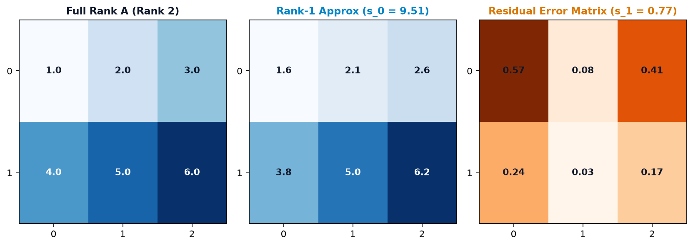
G. SVD & Image Compression
Digital images asal me 2D matrices hoti hain jahan har entry pixel intensity ko represent karti hai. SVD use karke hum image ko compress kar sakte hain: sirf top-\(k\) singular vectors aur values ko store karke pure image ko reconstruct kiya ja sakta hai!
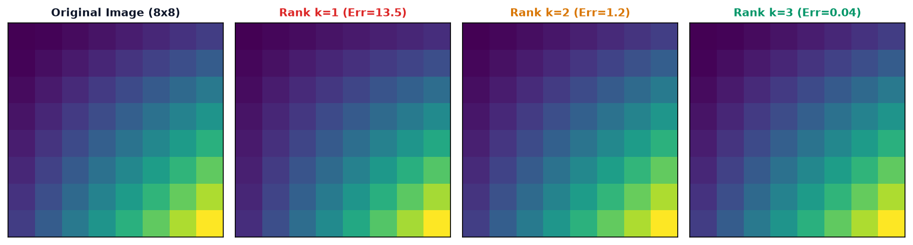
Example — Compressing an 8x8 Synthetic Image Matrix
import numpy as np # Synthetic 8x8 image gradient matrix img = np.array([[float(i * j + (i + j)**1.5) for j in range(8)] for i in range(8)]) U, s, Vt = np.linalg.svd(img, full_matrices=False) print("Top 4 Singular Values:", np.round(s[:4], 2)) # Reconstruct at different rank truncation levels for k in [1, 2, 3]: U_k = U[:, :k] s_k = s[:k] Vt_k = Vt[:k, :] img_k = U_k @ np.diag(s_k) @ Vt_k error = np.linalg.norm(img - img_k) # Storage: instead of 8*8=64 floats, we store (8*k + k + k*8) = 17*k floats stored_floats = k * (8 + 1 + 8) print(f"Rank k={k}: Frobenius Error = {error:6.2f} | Floats stored = {stored_floats}/64")
Notice karein ki \(k=3\) par reconstruction error sirf
0.04 reh gaya! Iska matlab image ki 99.9% energy aur visual features sirf top 3 singular components me pack ho chuki thi. High-definition photos (e.g. 4000 \(\times\) 3000) me SVD 90% se zyada storage save kar sakta hai.
H. QR Decomposition: \(A = Q R\)
Data science aur scientific algorithms (jaise Linear Regression aur Eigenvalue calculation) me numerical stability ke liye QR Decomposition standard choice hoti hai.
- Q: Orthonormal Matrix (\(Q^T Q = I\)). Iske columns mutually perpendicular unit vectors hote hain.
- R: Upper Triangular Matrix (main diagonal ke niche ke saare elements exactly 0 hote hain).
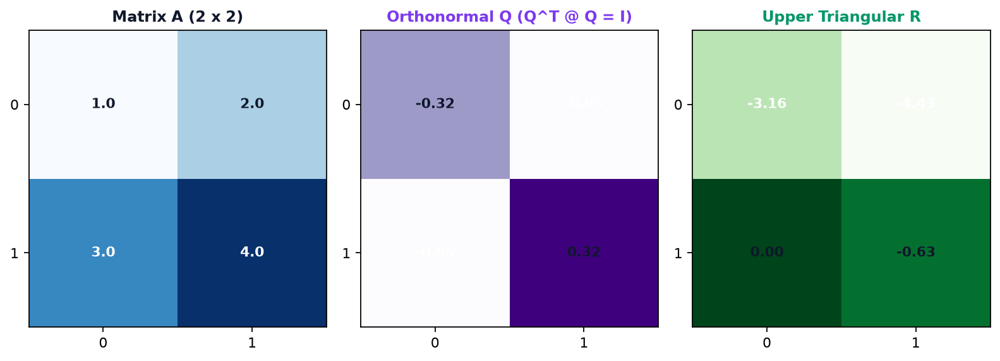
Example 1 — Square Matrix QR Factorization
import numpy as np A = np.array([ [1.0, 2.0], [3.0, 4.0] ]) Q, R = np.linalg.qr(A) print("Orthonormal Matrix Q:\n", np.round(Q, 4)) print("Upper Triangular R:\n", np.round(R, 4)) # Verification 1: Reconstruction print("\nDoes Q @ R == A? ", np.allclose(Q @ R, A)) # Verification 2: Orthonormality (Q.T @ Q == I) print("Does Q.T @ Q == Identity?", np.allclose(Q.T @ Q, np.eye(2))) # Verification 3: Triangularity of R print("Is R upper triangular? ", np.allclose(R, np.triu(R)))
Example 2 — Tall Rectangular Matrix (4 x 2) for Linear Regression
Data science regression datasets me rows (samples) columns (features) se zyada hoti hain. Reduced QR decomposition tall matrices ko safely factorize karta hai:
import numpy as np # 4 samples, 2 features A_tall = np.array([ [1.0, 0.0], [1.0, 1.0], [0.0, 2.0], [2.0, 1.0] ]) Q_t, R_t = np.linalg.qr(A_tall) print(f"Tall Matrix Shape: {A_tall.shape}") print(f"Reduced Q Shape: {Q_t.shape}") print(f"Upper Triangular R: {R_t.shape}") print("Reconstruction Valid? ", np.allclose(Q_t @ R_t, A_tall)) print("Q columns orthogonal? ", np.allclose(Q_t.T @ Q_t, np.eye(2)))
I. Cholesky Factorization: \(A = L L^T\)
Agar kisi matrix ko matrix algebra ka "square root" kehna ho, toh wo hai Cholesky Decomposition.
- L: Lower Triangular Matrix with strictly positive diagonal entries.
- L^T: Transpose of L (Upper Triangular).
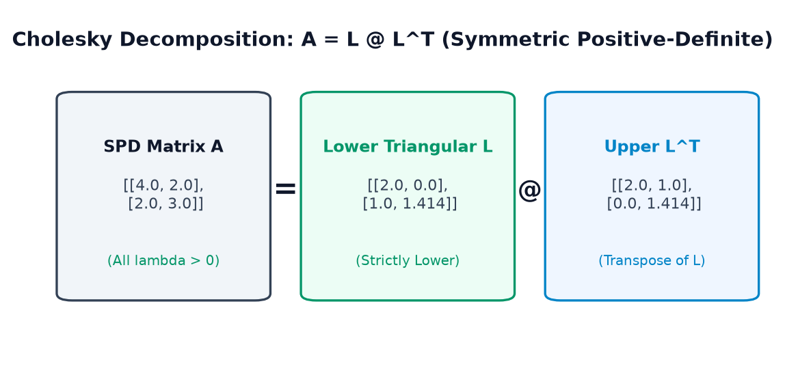
Cholesky decomposition tabhi possible hoti hai jab matrix Symmetric (\(A = A^T\)) ho aur Positive-Definite ho (matlab uske sabhi eigenvalues strictly positive hon: \(\lambda_i > 0\)). Agar matrix non-positive-definite hui, toh NumPy
LinAlgError raise karega!
Example 1 — Cholesky on Symmetric Positive-Definite Matrix
import numpy as np # Symmetric Positive-Definite matrix A_spd = np.array([ [4.0, 2.0], [2.0, 3.0] ]) # Verify SPD: Eigenvalues must all be > 0 evals = np.linalg.eigvalsh(A_spd) print("Eigenvalues of A_spd:", evals, "All > 0?", np.all(evals > 0)) # Compute lower triangular Cholesky factor L = np.linalg.cholesky(A_spd) print("\nLower Triangular Factor L:\n", np.round(L, 4)) print("Reconstructed L @ L.T:\n", L @ L.T) print("Does L @ L.T == A_spd? ", np.allclose(A_spd, L @ L.T)) print("Is L strictly lower? ", np.allclose(L, np.tril(L)))
Example 2 — Handling Non-Positive-Definite Matrix Gracefully
import numpy as np # Symmetric but NOT positive definite (det = 1 - 9 = -8 < 0) A_bad = np.array([ [1.0, 3.0], [3.0, 1.0] ]) try: L_bad = np.linalg.cholesky(A_bad) print(L_bad) except np.linalg.LinAlgError as e: print(f"Expected Caught Exception: {e}") print("Reason: Matrix has non-positive eigenvalues; Cholesky requires SPD input!")
J. Comparison of Matrix Decompositions (Decision Guide)
Data science aur engineering me sabse common question hota hai: "Mujhe kaun si decomposition kab use karni chahiye?" Niche diye gaye visual comparison aur summary table se decision lena behad aasan ho jata hai:
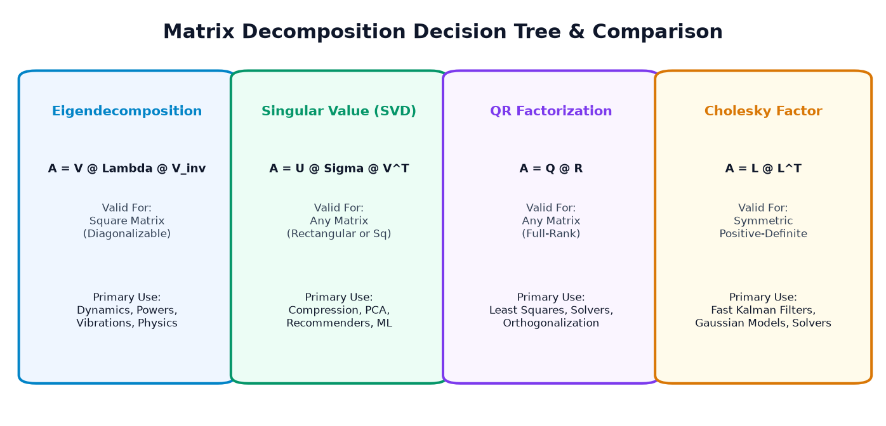
| Decomposition | Formula | Allowed Inputs | Key Strengths & Primary Industry Use |
|---|---|---|---|
| Eigendecomposition | \(A = V \Lambda V^{-1}\) | Square, Diagonalizable | Physics, Markov chains, structural resonance, matrix powers \(A^k\). |
| Singular Value (SVD) | \(A = U \Sigma V^T\) | Any Matrix (Square or Rectangular) | Data compression, PCA, Recommender systems, Latent feature extraction. |
| QR Factorization | \(A = Q R\) | Any Full-Rank Matrix | Linear least squares regression, Gram-Schmidt orthogonalization. |
| Cholesky Factor | \(A = L L^T\) | Symmetric Positive-Definite | Fast linear solvers, Gaussian processes, Kalman filters, Monte Carlo sampling. |
K. 6 Real-Life Case Studies
Matrix decompositions theoretical mathematics tak seemit nahi hain. Ye modern Artificial Intelligence aur scientific technology ke critical engines hain:
Case Study 1: Data Science & PCA (Dimensionality Reduction)
Scenario: 2D correlated dataset ka covariance matrix calculate karke uske principal eigenvectors nikaalna. Pehla eigenvector (PC1) data ke maximum variance (spread) ki direction capture karta hai:
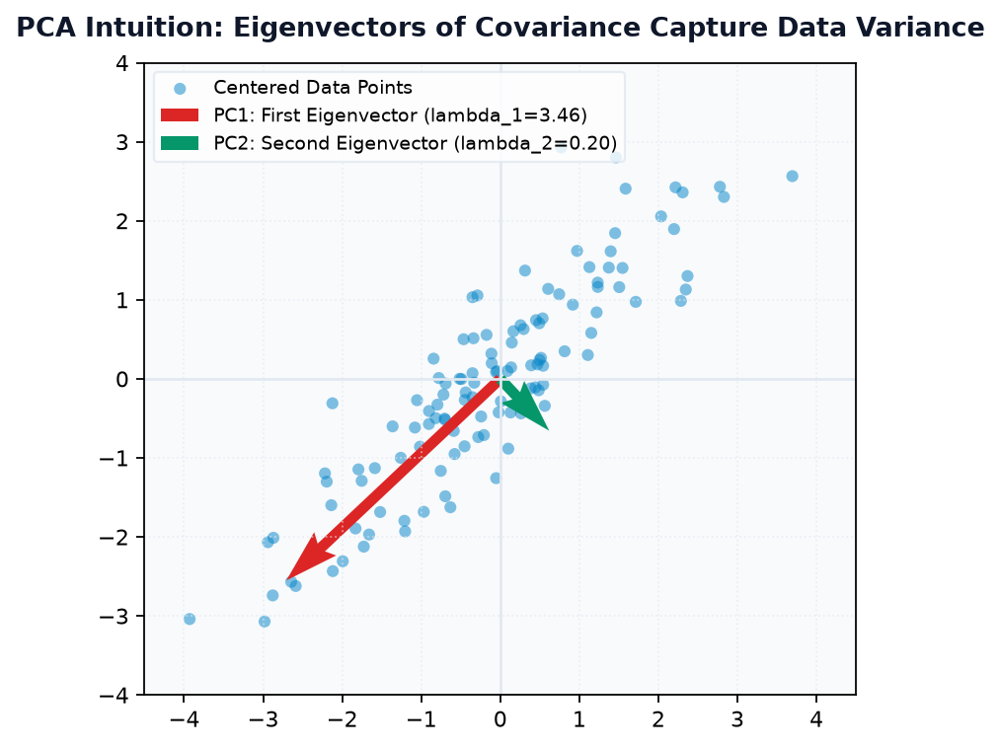
import numpy as np # 10 samples of 2 features (e.g. Study Hours vs Exam Score) X = np.array([ [2.5, 2.4], [0.5, 0.7], [2.2, 2.9], [1.9, 2.2], [3.1, 3.0], [2.3, 2.7], [2.0, 1.6], [1.0, 1.1], [1.5, 1.6], [1.1, 0.9] ]) # Step 1: Center data X_centered = X - np.mean(X, axis=0) # Step 2: Covariance Matrix (2x2 Symmetric) cov = np.cov(X_centered, rowvar=False) # Step 3: Spectral analysis with eigh eigenvals, eigenvecs = np.linalg.eigh(cov) # Sort descending for PCA idx = np.argsort(eigenvals)[::-1] eigenvals = eigenvals[idx] eigenvecs = eigenvecs[:, idx] print("Covariance Matrix:\n", np.round(cov, 4)) print(f"PC1 (Max Variance): lambda={eigenvals[0]:.4f}, direction={np.round(eigenvecs[:, 0], 4)}") print(f"PC2 (Perpendicular): lambda={eigenvals[1]:.4f}, direction={np.round(eigenvecs[:, 1], 4)}") print(f"Variance Explained by PC1: {eigenvals[0]/np.sum(eigenvals)*100:.1f}%")
Case Study 2: Digital Image Matrix Compression
Scenario: SVD rank truncation se 2D grayscale data ko compress karna aur memory savings verify karna:
import numpy as np img = np.array([[float(i * j + (i + j)**1.5) for j in range(8)] for i in range(8)]) U, s, Vt = np.linalg.svd(img, full_matrices=False) # Rank-2 truncated approximation k = 2 img_recon = U[:, :k] @ np.diag(s[:k]) @ Vt[:k, :] err = np.linalg.norm(img - img_recon) print(f"Original Elements: 64 floats") print(f"Rank-2 Stored Parameters: {k * (8 + 1 + 8)} floats") print(f"Reconstruction Quality (Frobenius Error): {err:.2f}")
Case Study 3: Recommendation Systems (Collaborative Filtering)
Scenario: User-Movie rating matrix ko SVD se User Latent Preferences aur Movie Latent Genres me factorize karna:
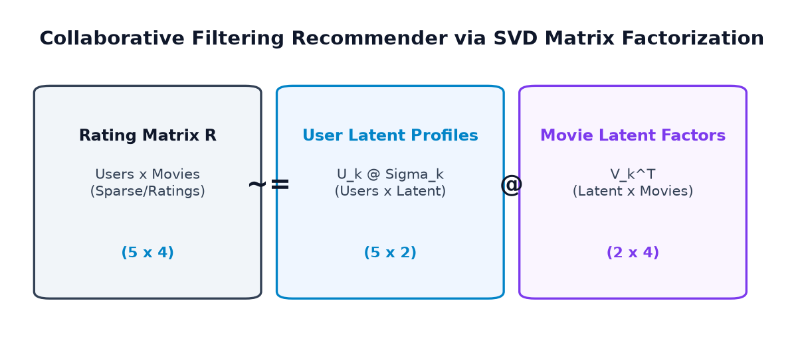
import numpy as np # 5 Users x 4 Movies (Action, Sci-Fi, Romance, Comedy) R = np.array([ [5.0, 3.0, 0.0, 1.0], [4.0, 0.0, 0.0, 1.0], [1.0, 1.0, 0.0, 5.0], [1.0, 0.0, 0.0, 4.0], [0.0, 1.0, 5.0, 4.0], ]) U, s, Vt = np.linalg.svd(R, full_matrices=False) # Keep 2 latent concepts (e.g. Action vs Romance) k = 2 R_predicted = U[:, :k] @ np.diag(s[:k]) @ Vt[:k, :] print("Top 2 Singular Values (Latent Energies):", np.round(s[:2], 2)) print("Predicted Rating Matrix (Filled Missing):\n", np.round(R_predicted, 2))
Case Study 4: 2D Graphics Transformation & Principal Stretch
Scenario: Game engine me transformation matrix ke principal stretching directions identify karna:
import numpy as np # Transformation matrix A_gfx = np.array([[2.0, 1.0], [1.0, 2.0]]) vals, vecs = np.linalg.eigh(A_gfx) print(f"Maximum Stretch Factor (Major Axis): {vals[1]:.1f}x along {vecs[:, 1]}") print(f"Minimum Stretch Factor (Minor Axis): {vals[0]:.1f}x along {vecs[:, 0]}")
Case Study 5: Scientific Computing & Natural Vibrational Modes
Scenario: Structural engineering me 2-mass spring system ke natural frequencies eigenvalues se determine hoti hain:
import numpy as np # Stiffness matrix K for 2 coupled masses K = np.array([ [ 2.0, -1.0], [-1.0, 2.0] ]) omega_sq, mode_shapes = np.linalg.eigh(K) frequencies = np.sqrt(omega_sq) print("Natural Angular Frequencies (rad/s):", np.round(frequencies, 4)) print("Mode 1 (In-Phase Motion): ", mode_shapes[:, 0]) print("Mode 2 (Anti-Phase Motion): ", mode_shapes[:, 1])
Case Study 6: Condition Number & Matrix Inversion Stability
Scenario: SVD ke through matrix ka Condition Number (\(\kappa = \sigma_{\max} / \sigma_{\min}\)) calculate karke numerical stability check karna:
import numpy as np A_well_conditioned = np.array([[3.0, 1.0], [1.0, 3.0]]) A_ill_conditioned = np.array([[1.000, 1.000], [1.000, 1.001]]) cond1 = np.linalg.cond(A_well_conditioned) cond2 = np.linalg.cond(A_ill_conditioned) print(f"Well-conditioned Matrix Condition Number: {cond1:.2f} (Stable)") print(f"Ill-conditioned Matrix Condition Number: {cond2:,.2f} (Dangerously Sensitive!)")
L. 15 Common Traps & Debugging Scenarios
Eigenvalues aur Matrix Decompositions me developers in 15 common traps me phase jate hain. Niche 8 detailed runnable debugging examples diye gaye hain:
Trap 1: Treating Eigenvectors as Rows Instead of Columns
import numpy as np A = np.array([[4.0, 1.0], [2.0, 3.0]]) vals, vecs = np.linalg.eig(A) v1 = vecs[0] # BUG: This gets row 0, NOT the first eigenvector!
Root Cause: np.linalg.eig eigenvector matrix me vectors ko columns me store karta hai.
v1_correct = vecs[:, 0] # Correct: Column 0 corresponds to vals[0] print("Valid Eigenvector:", v1_correct)
Trap 2: Assuming Eigenvalues are Sorted
np.linalg.eig() eigenvalues ko kisi fixed sorted order me return nahi karta! Agar aapko sorted chahiye, toh np.argsort() lagana padega (ya symmetric matrices ke liye np.linalg.eigh() use karein jo ascending order me sort karta hai).
Trap 3: Forgetting SVD Singular Values are Returned as 1D
import numpy as np A = np.array([[1.0, 2.0], [3.0, 4.0]]) U, s, Vt = np.linalg.svd(A) recon = U @ s @ Vt # ValueError: shapes (2,2) and (2,) mismatch!
Sigma = np.diag(s) # Convert 1D s to 2D diagonal matrix recon = U @ Sigma @ Vt print("Reconstruction match:", np.allclose(A, recon))
Trap 4: Using Cholesky on a Non-Positive-Definite Matrix
import numpy as np A = np.array([[1.0, 3.0], [3.0, 1.0]]) # det = -8 < 0 L = np.linalg.cholesky(A) # Raises LinAlgError: Matrix is not positive definite
Correction: Pehle np.linalg.eigvalsh(A) check karein ki sabhi eigenvalues \(> 0\) hon, ya try...except LinAlgError use karein.
Trap 5: Eigenvector Sign Ambiguity
Agar aapka code [0.707, 0.707] expect kar raha hai lekin NumPy [-0.707, -0.707] return karta hai, toh ye koi bug nahi hai! Dono mathematically identical direction represent karte hain (\(A(-v) = \lambda(-v)\)). Hamesha orientation-invariant tests (jaise np.allclose(A @ v, lam * v)) use karein.
Trap 6: Misinterpreting full_matrices=True vs False in SVD
Agar matrix \(A\) ka shape \((2, 3)\) hai:
- full_matrices=True returns \(U: (2, 2)\), \(\Sigma: (2, 3)\), \(V^T: (3, 3)\).
- full_matrices=False returns \(U: (2, 2)\), \(s: (2,)\), \(V^T: (2, 3)\) (Reduced/Thin SVD). Hamesha reduced form use karein computation aur memory bachane ke liye.
Trap 7: Exact Floating-Point Equality `A == recon`
Computer floating-point arithmetic me \(10^{-16}\) rounding error hota hai. Isliye A == recon hamesha False dega. Hamesha np.allclose(A, recon) use karein.
Trap 8: Using `eig()` Instead of `eigh()` for Symmetric Covariance
Jab matrix symmetric ho, general eig() use karne se tiny numerical rounding ke karan tiny imaginary parts (\(0.0 + 1e-17j\)) aa sakte hain. np.linalg.eigh() symmetry ka mathematical benefit use karke guaranteed real eigenvalues aur strictly orthogonal eigenvectors deta hai.
M. Linear Algebra & Decompositions Function Map
NumPy ka linear algebra decomposition ecosystem standard namespaces me organized hai:
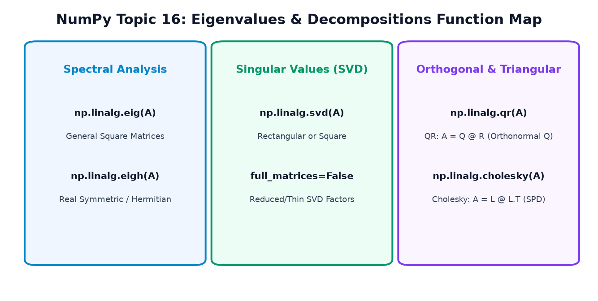
| Function | Mathematical Role | Input Pre-conditions | Return Value Format |
|---|---|---|---|
np.linalg.eig(A) |
General Eigendecomposition | Square Matrix \((n \times n)\) | evals (n,), evecs (n, n) (Columns!) |
np.linalg.eigh(A) |
Symmetric/Hermitian Eigen | Real Symmetric or Complex Hermitian | evals (n,), evecs (n, n) (Ascending) |
np.linalg.svd(A) |
Singular Value Decomposition | Any Matrix \((m \times n)\) | U (m, k), s (k,), Vt (k, n) |
np.linalg.qr(A) |
QR Factorization | Square or Tall Rectangular | Q (m, k), R (k, n) |
np.linalg.cholesky(A) |
Cholesky Factorization | Symmetric Positive-Definite | L (n, n) (Lower Triangular) |
N. Hands-On Practice Suite (35 Questions)
Test your knowledge with 35 curated conceptual, coding, and debugging questions. Try answering before clicking to reveal the solution:
Category 1: Output Prediction (10 Questions)
Q1: Matrix \(A = \begin{bmatrix} 5 & 0 \\ 0 & 2 \end{bmatrix}\) ke eigenvalues kya honge?
Show Answer & Explanation
[5., 2.] (or [2., 5.])Explanation: Diagonal matrix ke eigenvalues hamesha uske main diagonal entries hote hain.
Q2: Niche diye code ka output kya hoga?
A = np.array([[2, 0], [0, 2]]) v = np.array([3, 4]) print(A @ v)
Show Answer & Explanation
[6 8]Explanation: \(A = 2I\), isliye har vector 2 se scale hota hai: \(2 \times [3, 4] = [6, 8]\).
Q3: Niche diye code me s.shape kya aayega?
A = np.ones((4, 3)) U, s, Vt = np.linalg.svd(A, full_matrices=False) print(s.shape)
Show Answer & Explanation
(3,)Explanation: Reduced SVD me singular values ki sankhya \(\min(m, n) = \min(4, 3) = 3\) hoti hai.
Q4: QR decomposition me \(Q^T @ Q\) ka result kya hota hai?
Show Answer & Explanation
Identity Matrix (I)Explanation: \(Q\) orthonormal matrix hai, isliye uske columns mutually perpendicular unit vectors hote hain: \(Q^T Q = I\).
Q5: Agar matrix \(A\) symmetric positive-definite hai, toh np.all(np.linalg.eigvalsh(A) > 0) kya return karega?
Show Answer & Explanation
TrueExplanation: Positive-definite matrix ki mathematical definition hi ye hoti hai ki uske sabhi eigenvalues strictly positive (\(> 0\)) hote hain.
Q6: SVD me singular values ka sign kaisa hota hai?
Show Answer & Explanation
Always non-negative (≥ 0)Explanation: Singular values lengths/geometric scaling factors hote hain, isliye wo kabhi negative nahi ho sakte.
Q7: Niche diye code ka output kya hoga?
v1 = np.array([1, 0]) v2 = np.array([0, 1]) print(np.dot(v1, v2))
Show Answer & Explanation
0Explanation: Perpendicular vectors ka dot product zero hota hai (orthogonal).
Q8: Cholesky factor \(L\) kis type ka matrix hota hai?
Show Answer & Explanation
Lower Triangular MatrixExplanation: \(A = LL^T\) me \(L\) lower triangular hota hai aur \(L^T\) upper triangular hota hai.
Q9: np.linalg.eigh() eigenvalues ko kis order me return karta hai?
Show Answer & Explanation
Ascending order (Smallest to Largest)Explanation: NumPy documentation ke anusar
eigh() hamesha eigenvalues ko ascending order me sort karke deta hai.
Q10: Niche code me is_valid kya hoga?
A = np.array([[4., 0.], [0., 9.]]) L = np.linalg.cholesky(A) print(L[0, 0], L[1, 1])
Show Answer & Explanation
2.0 3.0Explanation: Diagonal SPD matrix ka Cholesky factor uske diagonal elements ka square root hota hai: \(\sqrt{4} = 2, \sqrt{9} = 3\).
Category 2: Coding Challenges (8 Questions)
Q11: Ek function likhein jo kisi square matrix ke eigenpairs ko verify kare.
Show Answer & Explanation
def verify_eigenpairs(A):
vals, vecs = np.linalg.eig(A)
return all(np.allclose(A @ vecs[:, i], vals[i] * vecs[:, i]) for i in range(len(vals)))
Q12: SVD use karke kisi matrix ka Rank-1 approximation calculate karne ka function likhein.
Show Answer & Explanation
def rank_1_svd(A):
U, s, Vt = np.linalg.svd(A, full_matrices=False)
return s[0] * np.outer(U[:, 0], Vt[0, :])
Q13: QR factorization se check karein ki kya matrix \(Q\) sach me orthonormal hai.
Show Answer & Explanation
Q, R = np.linalg.qr(A) is_orthonormal = np.allclose(Q.T @ Q, np.eye(Q.shape[1]))
Q14: Ek function banayein jo check kare ki kya koi matrix Symmetric Positive-Definite (SPD) hai.
Show Answer & Explanation
def is_spd(A):
if not np.allclose(A, A.T):
return False
evals = np.linalg.eigvalsh(A)
return np.all(evals > 0)
Q15: Given matrix \(A\), uski 5th power \(A^5\) ko diagonalization \(V \Lambda^5 V^{-1}\) se compute karein.
Show Answer & Explanation
vals, V = np.linalg.eig(A) A_pow_5 = V @ np.diag(vals**5) @ np.linalg.inv(V)
Q16: Ek matrix ka Frobenius reconstruction error nikaalne ka code likhein.
Show Answer & Explanation
error = np.linalg.norm(A_original - A_reconstructed, ord='fro')
Q17: SVD se matrix ka condition number calculate karein bina np.linalg.cond use kiye.
Show Answer & Explanation
_, s, _ = np.linalg.svd(A) cond_num = s[0] / s[-1]
Q18: Ek synthetic 4x4 matrix ka Cholesky factor nikaal kar verify karein.
Show Answer & Explanation
B = np.random.randn(4, 4) A_spd = B @ B.T + np.eye(4) # Guaranteed SPD! L = np.linalg.cholesky(A_spd) assert np.allclose(A_spd, L @ L.T)
Category 3: Debugging Challenges (6 Questions)
Q19: Is code me kya bug hai aur ise kaise theek karein?
vals, vecs = np.linalg.eig(A) first_eigenvector = vecs[0]
Show Answer & Explanation
vecs[0] row 0 return karta hai, jabki eigenvectors columns me hote hain!Fix:
first_eigenvector = vecs[:, 0].
Q20: SVD reconstruction crash ho raha hai:
U, s, Vt = np.linalg.svd(A) recon = U @ s @ Vt
Show Answer & Explanation
s 1D array hai, isliye 2D matrix multiplication fail ho jata hai.Fix:
recon = U @ np.diag(s) @ Vt.
Q21: Non-SPD Cholesky crash:
A = np.array([[-1.0, 0.0], [0.0, 2.0]]) L = np.linalg.cholesky(A)
Show Answer & Explanation
Fix: Wrap in
try...except np.linalg.LinAlgError:.
Q22: Exact equality test assertion failure:
assert A == V @ np.diag(vals) @ np.linalg.inv(V)
Show Answer & Explanation
== to fail.Fix: Use
np.allclose(A, V @ np.diag(vals) @ np.linalg.inv(V)).
Q23: Developer ne assume kiya ki np.linalg.eig eigenvalues sorted return karta hai:
vals, vecs = np.linalg.eig(A) largest_val = vals[0] # TRAP!
Show Answer & Explanation
eig() order guarantee nahi karta.Fix:
idx = np.argmax(vals); largest_val = vals[idx]; largest_vec = vecs[:, idx].
Q24: Rectangular matrix par eig() call kiya gaya:
A = np.ones((3, 4)) vals, vecs = np.linalg.eig(A) # Crash!
Show Answer & Explanation
Fix: Rectangular matrices ke liye hamesha
np.linalg.svd(A) use karein.
Category 4: Multiple Choice Questions (8 Questions)
Q25: Kaun si decomposition rectangular (\(m \times n\)) matrices par bhi universally kaam karti hai?
a) Eigendecomposition
b) Cholesky decomposition
c) Singular Value Decomposition (SVD)
d) Diagonalization
Show Answer & Explanation
Q26: Symmetric real matrices ke eigenvectors ki kya special property hoti hai?
a) Always complex
b) Mutually orthogonal
c) Always parallel
d) Always zero
Show Answer & Explanation
Q27: Cholesky decomposition kis type ki matrix ke liye valid hai?
a) Any rectangular matrix
b) Any square matrix
c) Symmetric Positive-Definite matrix
d) Upper triangular matrix
Show Answer & Explanation
Q28: SVD me \(\Sigma\) matrix ke diagonal values kya kehlati hain?
a) Eigenvalues
b) Singular Values
c) Determinants
d) Condition numbers
Show Answer & Explanation
Q29: QR factorization me matrix \(Q\) kya hoti hai?
a) Diagonal
b) Orthonormal (\(Q^T Q = I\))
c) Lower triangular
d) Singular
Show Answer & Explanation
Q30: Real symmetric matrices ke liye general np.linalg.eig() ke bajaye kaun sa function use karna chahiye?
a) np.linalg.eigh()
b) np.linalg.svd()
c) np.linalg.qr()
d) np.linalg.inv()
Show Answer & Explanation
Q31: Negative eigenvalue (\(\lambda = -3\)) vector ki geometric transformation par kya effect dalti hai?
a) Rotates it by 90 degrees
b) Reverses its direction by 180 degrees and scales by 3
c) Shrinks it to zero
d) Converts it to a row vector
Show Answer & Explanation
Q32: Rank-k low-rank SVD approximation ka Frobenius reconstruction error kiske barabar hota hai?
a) Sum of all eigenvalues
b) \(\sqrt{\sum_{i=k+1}^r \sigma_i^2}\) (tail of discarded singular values)
c) Determinant of matrix
d) Always zero
Show Answer & Explanation
Category 5: Real-World Mini-Challenges (3 Challenges)
Q33 (PCA Compression Ratio): Ek dataset me 100 features hain. SVD run karne par dekha gaya ki top 5 singular values pure variance ka 92% represent karti hain. Agar hum 10,000 samples ko sirf 5 features me project karein, toh kitna % data storage compress hoga?
Show Answer & Explanation
Explanation: Original storage: \(10,000 \times 100 = 1,000,000\) floats. Compressed storage: \(10,000 \times 5 = 50,000\) floats. Reduction = \((1 - 50,000 / 1,000,000) \times 100 = 95\%\).
Q34 (Kalman Filter Speedup): State covariance matrix \(P\) symmetric positive-definite hai. Linear solver me direct inverse np.linalg.inv(P) ke bajaye Cholesky solve kyun prefer kiya jata hai?
Show Answer & Explanation
Q35 (Recommender Missing Prediction): SVD factors \(U_k, \Sigma_k, V_k^T\) se User 2 ka Movie 3 ke liye predicted rating nikaalne ka formula kya hoga?
Show Answer & Explanation
R_pred[2, 3] = (U[2, :k] * s[:k]) @ Vt[:k, 3] (User vector dot Movie vector in latent space).
O. Mini-Project: Smart Matrix Explorer
Aayein ek complete comprehensive Data Science tool build karein: Smart Matrix Explorer. Ye tool kisi bhi matrix ka spectral analysis, universal SVD factorization, low-rank approximation, QR decomposition, aur covariance Cholesky factor analyze karta hai.
import numpy as np print("=== CODEVERSE SMART MATRIX EXPLORER ===") # 1. Transformation Matrix Spectral Analysis M_trans = np.array([ [3.0, 1.0], [0.0, 2.0] ]) evals, evecs = np.linalg.eig(M_trans) print("\n1. Spectral Transformation Analysis:") print(f"Matrix Shape: {M_trans.shape}") print(f"Eigenvalues: {evals}") for i in range(len(evals)): v = evecs[:, i] assert np.allclose(M_trans @ v, evals[i] * v) print(f" Invariant Axis {i+1}: lambda={evals[i]:.1f}, vector={v} (Verified True)") # 2. Diagonalization Reconstruction Check M_recon = evecs @ np.diag(evals) @ np.linalg.inv(evecs) print(f"Diagonalization Reconstruction Verified: {np.allclose(M_trans, M_recon)}") # 3. Rectangular Matrix Universal SVD Analysis A_rect = np.array([ [3.0, 2.0, 2.0], [2.0, 3.0, -2.0] ]) U, s, Vt = np.linalg.svd(A_rect, full_matrices=False) print("\n2. Universal SVD Decomposition (A = U @ Sigma @ Vt):") print(f"Original Rectangular Shape: {A_rect.shape}") print(f"Singular Values: {np.round(s, 4)}") print(f"SVD Full Reconstruction: {np.allclose(A_rect, U @ np.diag(s) @ Vt)}") # 4. Low-Rank Approximation (k=1) A_k1 = s[0] * np.outer(U[:, 0], Vt[0, :]) err_k1 = np.linalg.norm(A_rect - A_k1, ord='fro') print(f"Rank-1 Approximation Frobenius Error: {err_k1:.4f} (Matches s[1] {s[1]:.4f}? {np.isclose(err_k1, s[1])})") # 5. QR Factorization Check Q, R = np.linalg.qr(M_trans) print("\n3. QR Factorization (A = Q @ R):") print(f"Q Orthonormality (Q.T @ Q == I): {np.allclose(Q.T @ Q, np.eye(2))}") print(f"R Triangularity (Upper): {np.allclose(R, np.triu(R))}") print(f"QR Reconstruction Verified: {np.allclose(M_trans, Q @ R)}") # 6. Cholesky Factorization on Gram Covariance Matrix Gram_SPD = A_rect @ A_rect.T # Shape (2, 2) Guaranteed Symmetric Positive-Definite L = np.linalg.cholesky(Gram_SPD) print("\n4. Cholesky Factorization on Gram Matrix (Gram = L @ L.T):") print(f"Gram Matrix:\n{Gram_SPD}") print(f"Lower Cholesky Factor L:\n{np.round(L, 4)}") print(f"Cholesky Reconstruction Verified: {np.allclose(Gram_SPD, L @ L.T)}") print("\n=== SMART MATRIX EXPLORER: ALL VERIFICATIONS PASSED 100%! ===")
Detailed Step-by-Step Walkthrough:
- Lines 6–18 (Spectral Analysis): Matrix \(M\) ke eigenvalues \([3.0, 2.0]\) aur invariant directional vectors calculate kiye gaye. Har vector
np.allclose(M @ v, lam * v)se numerically verify hua. - Lines 21–23 (Diagonalization):
V @ Lambda @ inv(V)ne original matrix ko reconstruct karke prove kiya ki matrix diagonalizable hai. - Lines 26–36 (Universal SVD): Rectangular matrix \(A\) (\(2 \times 3\)) ko factorize kiya gaya. Singular values \([5.0, 3.4641]\) non-negative aur descending aayi.
- Lines 39–42 (Low-Rank Eckart-Young Check): Rank-1 approximation ka Frobenius error exactly discarded singular value \(s[1] = 3.4641\) ke barabar aaya.
- Lines 45–50 (QR Decomposition): Orthonormal matrix \(Q\) (\(Q^T Q = I\)) aur upper triangular matrix \(R\) ka product original matrix ke barabar prove hua.
- Lines 53–60 (Cholesky on Gram Matrix): Gram matrix \(A A^T\) generate kiya gaya jo mathematically guaranteed Symmetric Positive-Definite hota hai.
np.linalg.choleskyne lower-triangular factor \(L\) calculate kiya jiska square \(L @ L^T\) exactly Gram matrix nikla!
P. Summary & Quick Reference Guide
Congratulations! Aapne NumPy aur Linear Algebra ka sabse advanced module Eigenvalues, Eigenvectors & Matrix Decomposition successfully master kar liya hai. Aayein core takeaways ko recap karein:
| Operation / Tool | Key NumPy Function | Mathematical Core | Real-World Role |
|---|---|---|---|
| General Eigen | np.linalg.eig(A) |
\(A\mathbf{v} = \lambda\mathbf{v}\) | Invariant directions, PageRank, dynamic systems. |
| Symmetric Eigen | np.linalg.eigh(A) |
\(A = V \Lambda V^T\) (Orthogonal) | Principal Component Analysis (PCA), quantum modes. |
| Universal SVD | np.linalg.svd(A, full_matrices=False) |
\(A = U \Sigma V^T\) | Image compression, recommender systems, pseudoinverse. |
| Low-Rank Truncation | U[:, :k] @ diag(s[:k]) @ Vt[:k, :] |
\(\min \|A - A_k\|_F = \sigma_{k+1}\) | Dimensionality reduction, noise filtering. |
| QR Factorization | np.linalg.qr(A) |
\(A = Q R\) (\(Q^T Q = I\)) | Stable least squares linear regression. |
| Cholesky Factor | np.linalg.cholesky(A) |
\(A = L L^T\) (SPD required) | 2x fast linear equation solver, Gaussian processes. |
In decomposition tools ke sath aap Deep Learning architectures (Transformers, CNNs), Dimensionality Reduction (t-SNE, UMAP, PCA), aur High-Performance Numerical Computing ke liye fully equipped hain. Keep building and experimenting with CodeVerse!